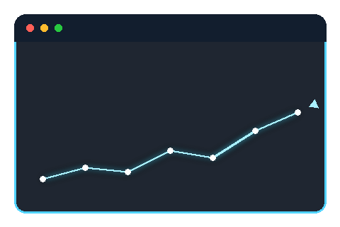

v2: карточка направления "Создание сайтов и SEO" - прямоугольная область с анимированным небом и облаками (как у Доктора), браузер+график поверх как акцентный визуал.

Создание сайтов и SEO
Сайты и лендинги под ключ, SEO-оптимизация и продвижение в поиске
Формат изменён по вашему замечанию: теперь это прямоугольная область (не квадратная app-иконка), фон - анимированное небо с облаками (переиспользовал ту же анимацию, что у Доктора), браузер со светящимся графиком - акцентный визуал поверх, не самостоятельная плитка.